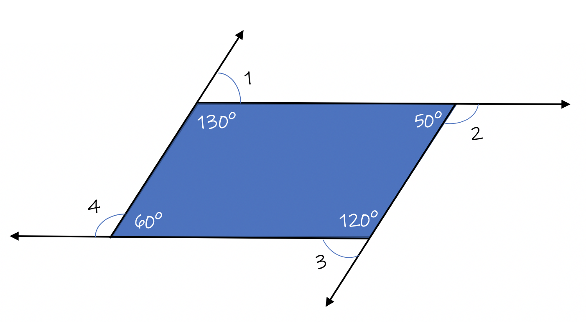
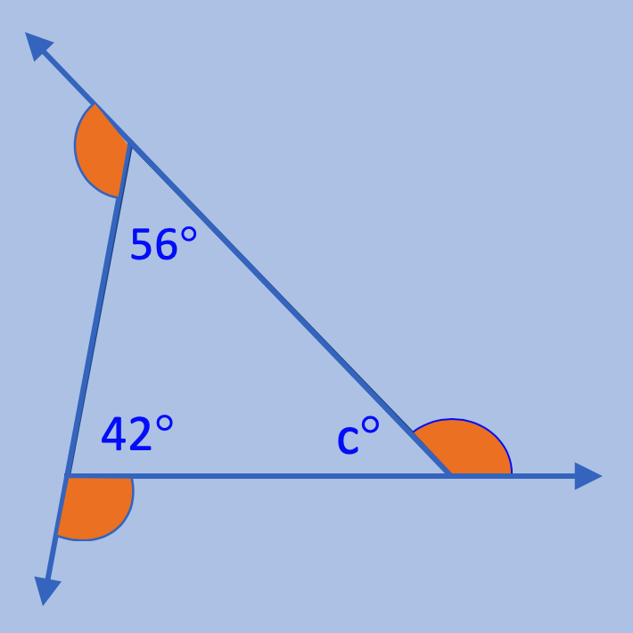

The Exterior Angles of any Polygon always sum to equal 360°
The table above shows the exterior angle sum of the first eight polygons. The table could be extended infinitely, as the number of sides increase, the sum of the exterior angles would continue to total 360°.
To calculate the missing degrees of a specific Exterior Angle,
subtract the degrees of the angle inside the triangle,that is next to the exterior angle, from 180°.
Each adjacent angle in the triangle form a Linear Pair, or a pair of angles that form a straight angle. Since a
straight angle is an 180° angle, subtracting the known
angle from 180° will give you the measures of the unknown angle.
You can also add two exterior angles' degrees, then subtract the total from 360° to get the third exterior angle's degree.
To calculate a missing angle's degrees if the angle is inside of a triangle:
use the Triangle Sum.
In the example above, ⦟c° = 180 - 56 - 42 will give the answer.
m⦟c = 82°
Let's look at a few examples:
Example 2: Solve for each exterior angle:  Subtract each interior angle from 180° to get the exterior angle's degree.
Example 3: Solve for all angles:

Inside the triangle, the three angles always add to equal 180° as per the Triangle Sum.
180° - 56° - 42° = 82° ★
To solve for the three exterior angles, subtract each adjacent interior angle from 180° since they form a linear pair.
Repeat this for each vertex.